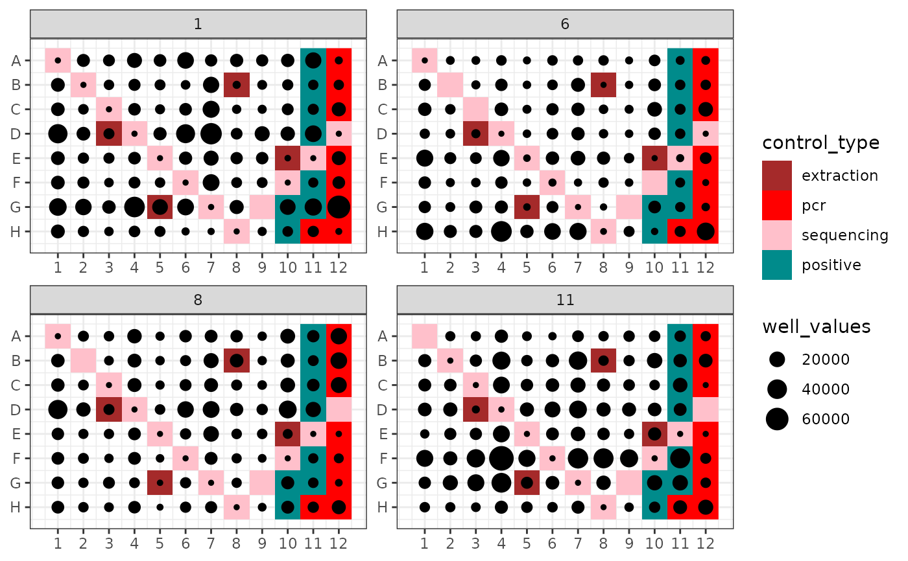
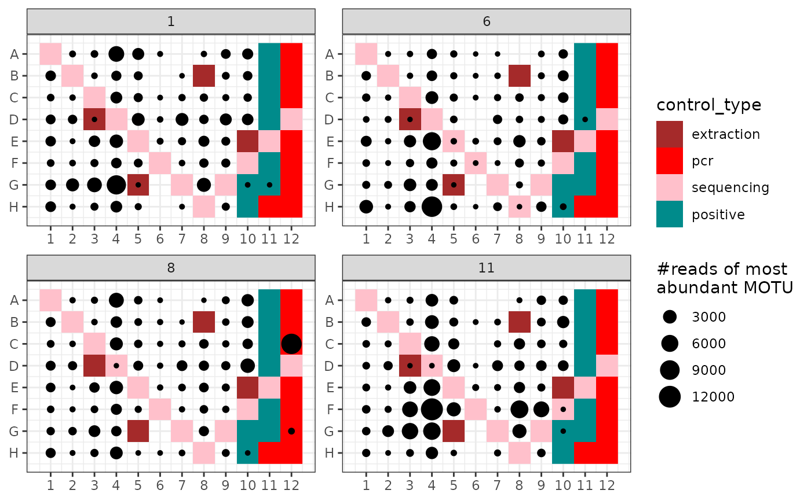

Plots an attribute of PCRs from a metabarlist object into the corresponding 96-well PCR plate design
ggpcrplate( metabarlist, legend_title = "well_values", FUN = function(metabarlist) { rowSums(metabarlist$reads) } )
| metabarlist | a |
|---|---|
| legend_title | the title of legend containing the plotted information. |
| FUN | a function which returns a vector containing the information to be plotted. The vector should be numeric and of equal length to the number of rows of the `reads` table. |
a ggplot
Visualising PCR attributes in their plate design context, i.e. their location in one or a set of 96-well PCR plates. This can be useful for identifying potential problems (e.g. high amount of reads in one control due to cross contaminations with neighboring samples).
Lucie Zinger, Clément Lionnet
## Plot the number of reads of the most abundant MOTU ggpcrplate(soil_euk, legend_title = "#reads of most \nabundant MOTU", FUN = function(m) { m$reads[, which.max(colSums(m$reads))] } )